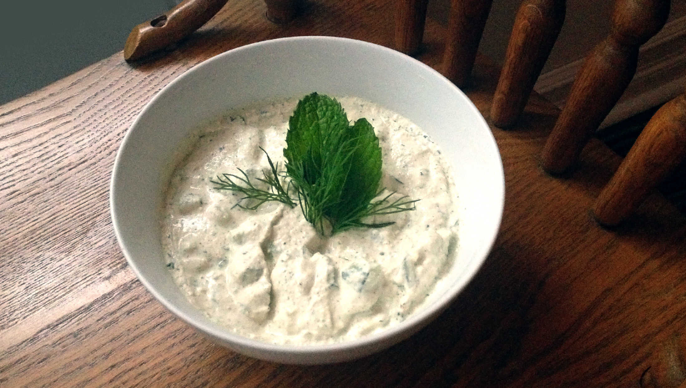

tzaziki
8 servings — 10 minutes
Making tzaziki is easy. This is a basic recipe that works well enough with all kinds of substitutions, depending on dietary restrictions.
Substitutions
It is possible to use sunflower seeds and tofu to replace the hemp seeds. In this recipe, we used half hemp and half soy, because hemp, while being nutritious, is not cheap. Using just shelled hemp seeds is very possible.
If using sunflower seeds, it is better to pre-soak them for 1-2h prior to blending. If using only tofu, you may not require extra water in the recipe.
 shelled hemp seeds170 g
shelled hemp seeds170 g soft tofu250 g
soft tofu250 g garlic2 cloves
garlic2 cloves water60 ml
water60 ml lemon1, juiced
lemon1, juiced fresh dill15 g
fresh dill15 g peppermint15 g
peppermint15 g persian cucumbers2
persian cucumbers2 saltpinch
saltpinch
sauce
- Blend 170 g (1/2 cup) of shelled hemp seeds with 225 g of soft tofu, 3 cloves of garlic, 60 ml (1/4 cup) of water and the juice of 1 lemon.
- Mince the fresh dill and peppermint, set aside.
- Cut 1 cucumber into small cubes.
- Add fresh dill, peppermint, the cubed persian cucumbers and 1 pinch of salt to the rest of the ingredients and mix well.
- Garnish with some peppermint and fresh dill leaves.